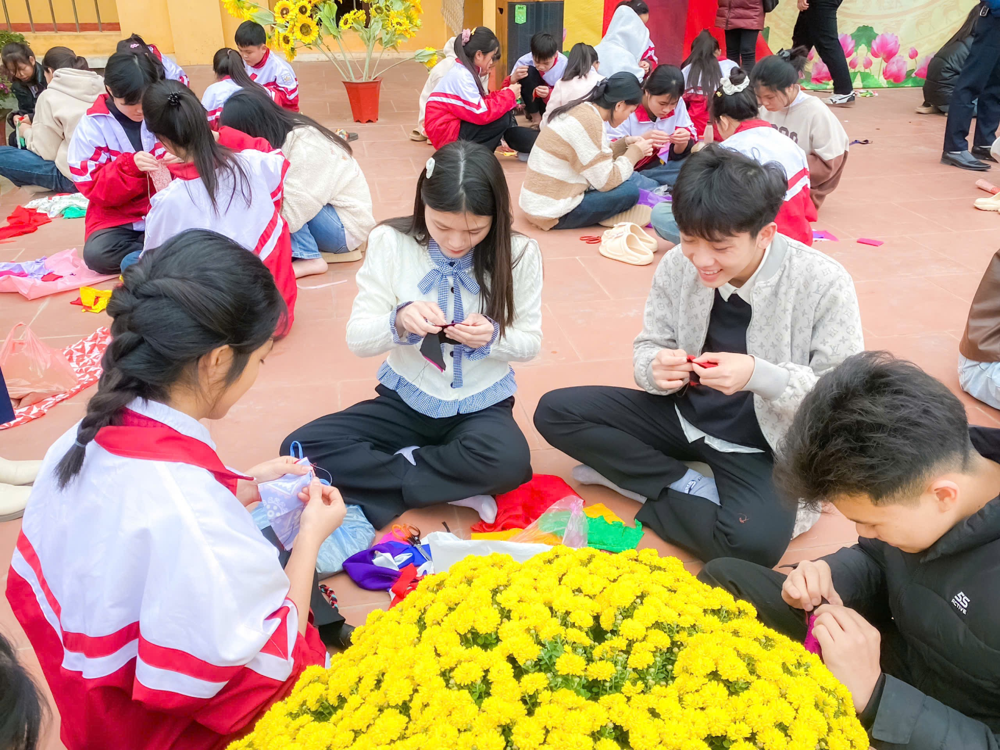
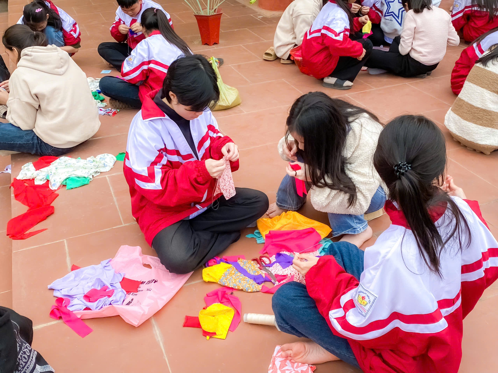
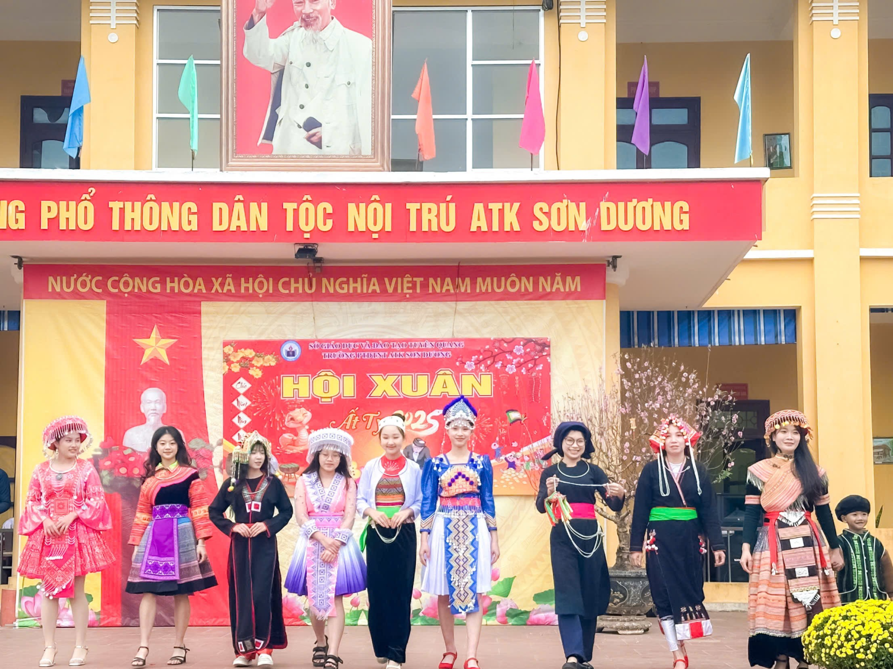
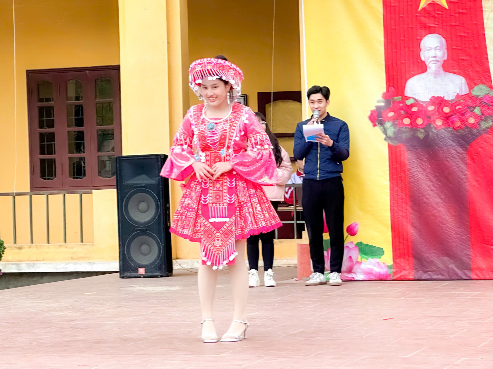
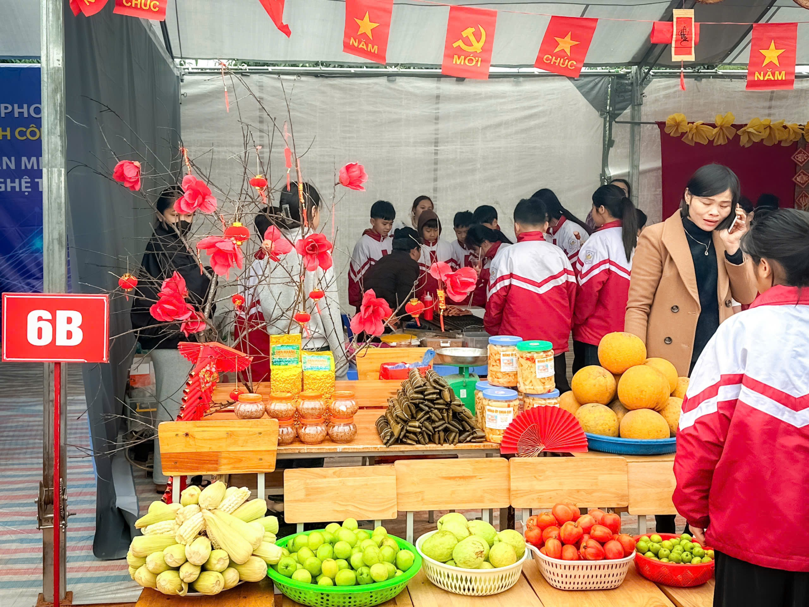
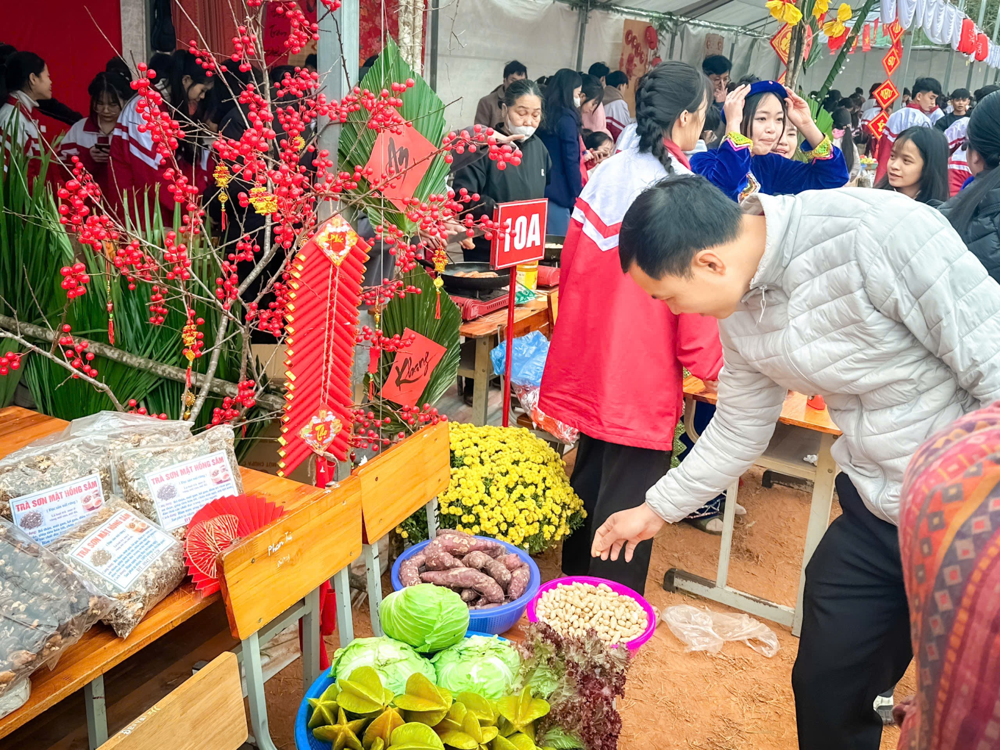
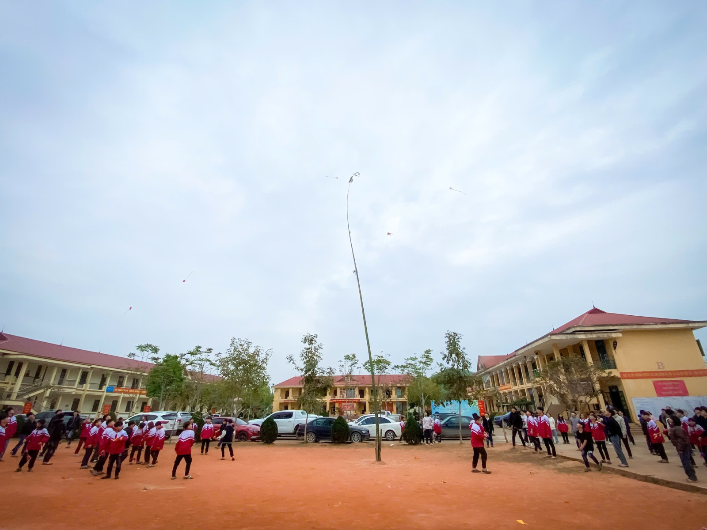
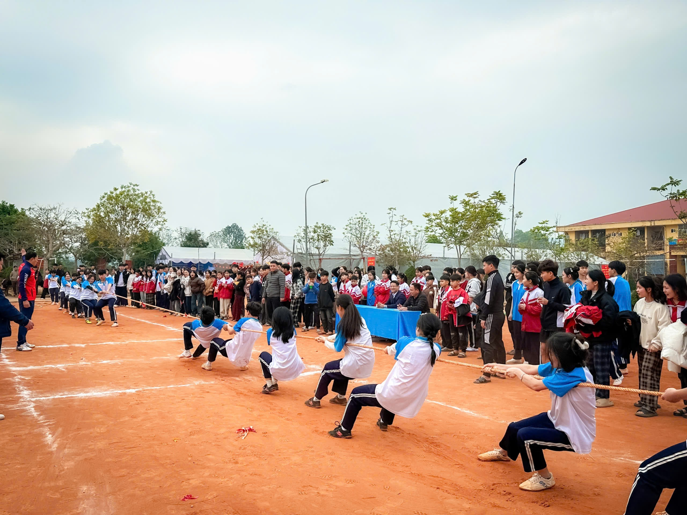

RỘN RÀNG HỘI XUÂN ẤT TỴ TẠI TRƯỜNG PTDTNT ATK SƠN DƯƠNG
Hoà chung không khí háo hức, vui tươi của dịp tết đến xuân về, trong hai ngày mùng 8 và mùng 9 tháng 2 năm 2025, trường PTDTNT ATK Sơn Dương tưng bừng tổ chức "Hội Xuân Ất Tỵ 2025”. Hội Xuân diễn ra trong không khí náo nhiệt, hân hoan với nhiều hoạt động sôi động: thi khâu còn, trình diễn trang phục dân tộc, trưng bày và bán các sản vật địa phương qua các gian hàng hội chợ; các trò chơi dân gian như kéo co, ném còn…Hội Xuân giúp học sinh phát triển toàn diện, mở rộng vốn hiểu biết về thế giới xung quanh và hình thành cho các em kỹ năng giao tiếp. Ngoài ra hội xuân còn giáo dục truyền thống cho học sinh về ngày Tết Nguyên Đán, đồng thời cũng tạo cơ hội cho các em trải nghiệm không gian chợ Tết với những sản vật địa phương.
Mở đầu chuỗi hoạt động mừng Đảng, mừng Xuân năm 2025, chiều ngày mùng 8 tháng 2, các em học sinh của trường PTDTNT ATK Sơn Dương đã rất phấn khởi tham gia cuộc thi khâu còn nhanh và đẹp. Với đôi bàn tay khéo léo của các em, những miếng vải đơn giản đã trở những quả còn rực rỡ sắc màu.


Ấn tượng hơn cả là phần thi trình diễn các trang phục dân tộc. Các đội đã mang đến ngày hội những phần trình diễn đặc sắc, trang phục đẹp mắt, lời thuyết minh hấp dẫn, gây ấn tượng sâu sắc với khán giả, qua đó tạo nên bức tranh đa sắc màu về văn hóa, con người và sức sống của đồng bào các dân tộc miền núi. Đây chính là hoạt động thiết thực góp phần bảo tồn, phát huy những giá trị văn hóa truyền thống của các dân tộc; giúp giáo viên và học sinh có cái nhìn và hiểu biết sâu sắc về những giá trị văn hóa trên mỗi trang phục truyền thống của đồng bào các dân tộc thiểu số.


Được mong đợi hơn cả là phần trưng bày và bán các sản vật địa phương qua các gian hàng hội chợ. Cả sân trường ngập tràn trong sắc xuân với 16 gian hàng được thiết kế với đủ các màu sắc khác nhau: Mỗi gian hàng đều mang một màu sắc riêng biệt. Tất cả tạo nên một bức tranh hội chợ Tết thật sống động và thiết thực, gần gũi với bối cảnh địa phương cùng vui tươi trong không khí xuân về. Các em học sinh được tham gia rất nhiều các hoạt động trải nghiệm cùng cô giáo như: chuẩn bị gian hàng, trưng bày, mua, bán, dạo chơi, tham quan, thưởng thức các món ăn ẩm thực địa phương.....Nhiều phụ huynh không quản ngại xa xôi cũng đồng hành với các con tham gia hội chợ. Các con rất thích thú và hạnh phúc khi được cùng bố mẹ trải nghiệm không khí xuân đang về ngay tại nơi các con học tập, rèn luyện. Được cùng gia đình vui xuân, lựa chọn những món ăn yếu thích và hạnh phúc hơn khi các con được vui vẻ bên gia đình trong không khí vui tươi của mùa xuân.


Bên cạnh đó, các em học sinh cũng rất thích thú khi được tham gia chơi các trò chơi dân gian như kéo co, ném còn…


Có thể nói Hội Xuân của trường PTDTNT ATK Sơn Dương đã để lại nhiều ấn tượng sâu sắc đối với các bậc phụ huynh và toàn thể các học sinh nhà trường. Một hoạt động thật bổ ích, lý thú và là một cơ hội tốt để giáo dục cho các em về văn hóa truyền thống, phong tục tập quán của quê hương. Nhà trường rất mong muốn sẽ tiếp tục nhận được sự ủng hộ và đồng hành của tất cả các bậc phụ huynh trong các hoạt động để nâng cao chất lượng nuôi dưỡng, chăm sóc, giáo dục toàn diện học sinh trong thời gian tới.
Nhà trường xin gửi lời cảm chân thành ơn tới ông, bà, bố, mẹ, anh, chị...... và con đã đến tham gia trải nghiệm "Hội Xuân Ất Tỵ 2025" để góp phần giúp cho Hội Xuân diễn ra thành công tốt đẹp!